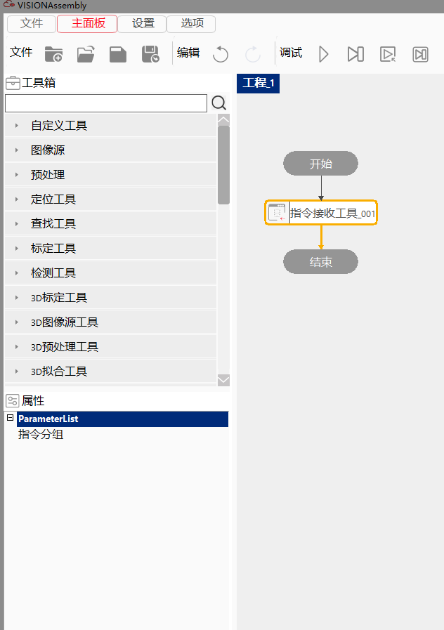
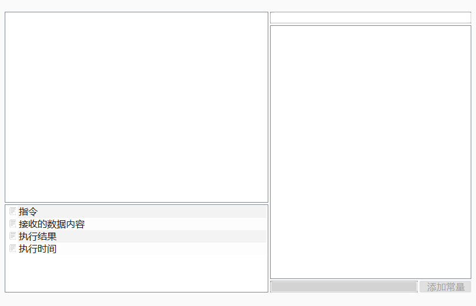

指令接收工具，需要配合通信指令集使用，主要功能是接收目标设备端口发送的特定格式的数据指令，完成与外部设备的信息交互。
适用于以太网Ehternet Tcp/IP 无协议 和 PLC MX-Competent两种通信方式。
使用网络、串口、寄存器等和其他设备端建立连接，按照通信指令规则接收其他设备端发来信息并解析出对应的数据（bool、string、double、float 、int、short）。


| 现象描述 | 解决方法 |
|---|---|
| 工具运行失败 | 1、检查工具的指令分组参数是否进行设置 |
| 2、检查工具的指令分组是否被删除或重命名（在指令管理中查看） | |
| 3、检查工具设置的指令分组是否设置了通信端口 | |
| 4、检查工具设置的指令分组是否设置了超时参数，工具是否通信超时 | |
| 5、检查通信是否中断，可在指令管理中查看当前分组使用的通信端口 | |
| 6、工具接收到数据，但未匹配到指令，可查看工具的参数“接收到的数据内容”，并与当前分组中接收指令相比较，检查是否接收到标志位数据 | |
| 7、工具接收到数据，匹配到指令，但指令变量赋值失败，可查看工具的参数“指令”，并与当前分组中找到匹配的接收指令，检查是否有指令变量未被赋值 |
| 参数名称 | 参数说明 |
|---|---|
| 指令分组 | 选择指令管理中的某一指令分组，当接收到设备发来的数据后，将按照指令规则匹配分组中接收指令。匹配成功后，将数据按指令格式赋值给指令变量。 |
| 参数名称 | 参数说明 |
|---|---|
| 指令 | 工具根据接收内容匹配到对应的通信指令，也可以理解为当前工具接收到的通信指令。 |
| 接收的数据内容 | 工具从其他设备接收到原始数据内容。 |
| 执行结果 | 工具执行结果。 |
| 执行时间 | 工具执行时间。 |
参见“\Samples\指令接收发送工具.gvp”。